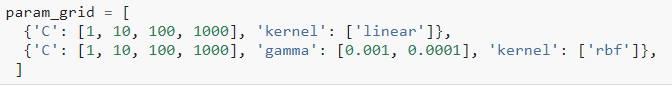

Model validation
- Holdout sets for validation: hold back some subset of the training data and this part is called holdout set. Then we use this part data for test.
- What are the possible disadvantages?
- Cross-validation: sometimes called rotation estimation or out-of-sample testing, is any of various similar model validation techniques for assessing how the results of a statistical analysis will generalize to an independent data set.

- K-fold cross validation: k is the number of number of sections/folds.
- K-fold cross validation is very useful for model performance estimation and model parameter tuning (HW4).
Sample Code
- Model Validation
- Accuracy_score: calculate classification accuracy rate, works for multiple classes
- Cross_val_score: automatically split data following cross validation ideas.
Source Code: https://colab.research.google.com/github/ruiwu1990/CSCI_4120/blob/master/Evaluation/Model%20Validation.ipynb
Group Activity 6
- Leave One Out: it is still cross validation. Each time, only one element is left for test, i.e. validation set size is always one.
- Leave-one-out cross-validation is approximately unbiased, because the difference in size between the training set used in each fold and the entire dataset is only a single pattern.
-
It tends to have a high variance (so you would get very different estimates if you repeated the estimate with different initial samples of data from the same distribution).
- Source Code: https://colab.research.google.com/github/ruiwu1990/CSCI_4120/blob/master/Evaluation/Model%20Validation.ipynb
Parameter Tuning
- Grid Search:
- Grid search is an approach to parameter tuning that will methodically build and evaluate a model for each combination of algorithm parameters specified in a grid.
- The grid search provided by sklearn.model_selection.GridSearchCV exhaustively generates candidates from a grid of parameter values specified with the param_grid parameter. For instance, the following param_grid:

- Random Search:
- Random search is an approach to parameter tuning that will sample algorithm parameters from a random distribution (i.e. uniform) for a fixed number of iterations. A model is constructed and evaluated for each combination of parameters chosen.
- Examples and more details can be found here:
https://scikit-learn.org/stable/modules/grid_search.html#exhaustive-grid-search
Homework 4: Group Homework
- Parameter Tuning and Select Best Model
- In Regularization jupyter notebook, we have walked through a bicycle traffic prediction example. You are required to compare “LinearRegression”, “Lasso”, and “Ridge” regression models. Select the best one based on 10-fold cross validation results. Please use the same features (holiday, daylight_hrs …) to predict traffic as shown in the sample code.
- You need to tune alpha for “Lasso” and “Ridge.” To do it, you should use “RandomizedSearchCV” (https://scikit-learn.org/stable/modules/generated/sklearn.model_selection.RandomizedSearchCV.html)
- README.MD file
- Team member names and email addresses
- All three models’ cross validation scores and alpha value (if applied)
- Which model performs the best
| Index | Prev |